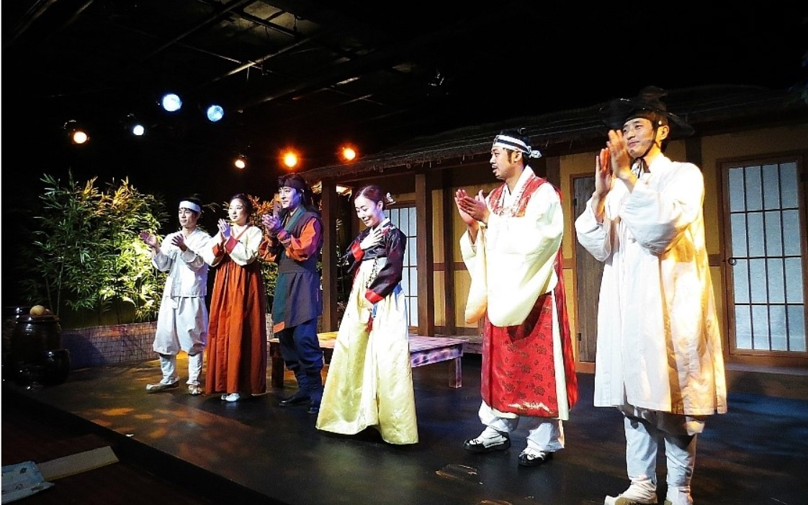
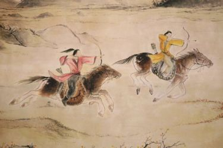
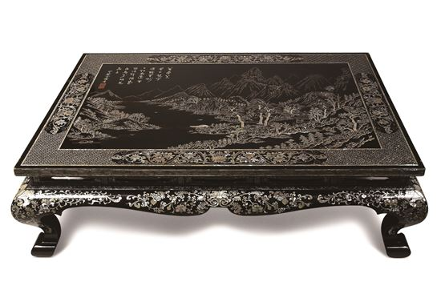

영화 <쌍화점>은 극중 주요인물이나 단체명, 그리고 극 전체를 아우르는 사건 모두 사실을 기초로 했다. 그럼에도 공민왕 때라는 구체적인 시대를 표기하지 않은 이유는 아마 동성애 때문이라고 생각된다. 왕이 생식 능력이 없고 홍림과의 동성애애 집착한다는 내용이 실제 사실을 의미할 수도 있다는 점에서 시대를 표기하기에는 부담으로 작용한 것이다. 실제로 공민왕 때의 기록을 보면 동성애에 대한 언급이 있다.
| 『고려사』, <세가>, 공민왕 21년(1372) 임자년 |
|---|
| 이때 홍륜(洪倫)․한안(韓安)․권진(權瑨)․홍관(洪寬)․노선(盧瑄) 등이 왕의 총애를 받으면서 늘 침소에서 시중을 들었다. 왕이 천성적으로 여색을 좋아하지 않는데다 교합(交合)이 불가능했기 때문에 공주가 살아있을 때에도 동침하는 일이 극히 드물었다. |
| 『고려사』, <세가>, 공민왕 21년(1372) 임자년 |
|---|
| 늘 스스로 아낙네 모양으로 화장을 한 후 먼저 젊은 내비(內婢)를 방으로 들어오게 해 보자기로 얼굴을 가리게 하고는 김흥경과 홍륜 등을 불러 음란한 행동을 하게 했다. 왕은 옆방의 문틈으로 그 광경을 훔쳐보다가 음란한 마음이 동하면 곧 홍륜 등을 침실로 들어오게 해 마치 남녀 사이처럼 자신을 음행하게 했다. |
▸이러한 기록에 의하면, 공민왕이 동성애를 했다고 나오고 있다. 그러나 단지 기록의 유무만으로 동성애자라고 부르는 것은 섣부른 판단이다. 이유인즉 공민왕은 노국공주가 생존했을 때만 해도 영민한 군주로서, 국정을 잘 수행했다. 그가 동성애에 빠지고 정사장면을 보는 걸 좋아하게 된 시점은 노국공주가 죽은 다음부터이다. 결국 그의 이러한 행위는 선천적이라기보다는 아내의 죽음이 가져온 정신적 충격의 후유증이다.
- 목종 고려의 제 7대 왕인 목종은 『고려사』와 『고려사절요』 등에서 그의 남색 행위가 상세히 묘사되어 전해지고 있다. 기록에 따르면 목종은 아름다운 외모를 지녔던 '유행간'을 총애하여 그와 남색의 관계를 맺었다고 전하며, 실제로도 목종은 선정왕후 유씨를 부인으로 두었으나, 29세의 나이로 숨을 거두기까지 슬하에 자식이 없었다고 한다.
- 충선왕 충선왕은 충렬왕의 아들이자 고려의 26대 왕이다. 기록에 따르면 충선왕은 원에 자주적인 태도를 취하였으며 고려 후기의 문신이었던 원충과 용양의 관계를 맺었다고 전한다. 총선왕은 원충을 매우 총애하여 벼슬을 내렸을 뿐 아니라, 왕씨 성과 새로운 이름까지 주었다.
- 충렬왕 동성애를 하였다는 직접적인 기록은 없으나 충렬왕의 취향에 맞는 노래와 공연을 위한 기녀들로 '남장별대'를 두었다. 이들은 여자 기생들이 남자 복색을 한 집단이었다. 실제로 당시 원에서도 동성애가 자주 이루어졌는데, 원에서의 생활을 오래 하고 온 충렬왕도 이러한 원의 사고와 행동 방식의 영향을 많이 받은 것으로 보인다.
- 고려시대의 여성 충렬왕 이후, 원의 간섭으로 인한 사회문제로 인해 여성의 위치에 시련이 찾아오게 된다. 공납과 공녀의 징발 문제 등 잦은 부역으로 인해 남편은 가정을 비우게 되고, 이에 따라 여성은 가사와 경제적 압박 또한 책임지게 된다. 생존을 위한 삶을 살았던 하층민 여성들은 이른 아침부터 밤까지 고된 노동에 종사하면서 그들의 고충과 불만을 토로하는 방법으로 속요를 통해 그들의 내면적 심리를 표출하게 된다.
- 고려가요 <쌍화점> 속 여성 화자 여성 화자의 진술에 따르면 낯선 남성에게 손목을 잡힌 일 혹은 그렇다는 소문이 퍼질 것을 우려하는 듯 보이기도 하지만 한편으로는 이를 드러내 자랑하고 싶은 심리가 담긴, 욕망에 찬 여성 화자의 발언으로도 읽힌다. 손목을 잡는 행위 자체를 두려워하거나 부끄러워하지 않고 오히려 즐기고 있다는 생각이 들도록 뚜렷한 거부의 흔적이 보이지 않기 때문이다.
- 영화 <쌍화점> 속 왕비 영화 속에서 왕후는 남편을 배신하고 남편의 정인인 홍림과 사랑을 나누게 된다. 나라의 최고 지도자이자 정인에 대한 배신이라는 점에서 왕후의 행동은 매우 일탈적이고 비윤리적 사건이라고 할 수 있다. 고려가요 속 솔직하고 당당하게 표현된 여성 화자의 성적 욕망은 영화 속에서도 찾아볼 수 있다. 정서적인 교류나 친밀함 없이, 왕의 강압에 의해 육체적인 관계로부터 시작된 왕후와 홍림의 사랑은 짧은 순간에 서로에 대한 강렬한 욕망으로 치닫는다. 이에 왕후는 홍림을 먼저 찾아가기도 하고 정인에게만 주는 선물을 주는 등 대담한 일탈 행위와 솔직한 감정과 욕구 표현에 서슴지 않는다.
이어지는 '그 자리에 나도 자러 가겠다'는 구절은 여성 화자의 일탈적 경험을 선망하며 자신도 그런 경험을 하고 싶다는 다른 여성 화자의 욕망을 가감 없이 드러낸 파격적인 발언으로 볼 수 있다. 오히려 그러한 일탈적 행동을 동경을 하는 듯 보이기도 한다.
이러한 여성 화자를 이중성을 지닌 인물로도 볼 수 있다. 도덕적 · 윤리적으로 그러한 행동이 바람직하지 않지만 어쩔 수 없다는 것을 스스로 인정하는 여성 화자는 당시 서민 여성들의 마음은 힘 있는 자에 의탁해서라도 호구지책을 면하자는 극도의 체념과 원망의 정서를 보여준다고 해석할 수도 있다. 즉, 시대의 타락상을 노골적인 표현을 통해 풍자한 작품인 것이다.
해석에 있어서, 학자들에 따라 차이는 존재하지만 여성 화자의 적극적인 욕망의 표현이라는 점에서 여성의 성적 주체성과 풍자적 효과를 확인할 수 있다.
고려가요 <쌍화점>에서 중요한 장면은 남녀가 사랑을 나누는 장면 이외에도 항상 목격자가 존재한다는 것이다. 그들을 관음하는 인물이 존재하며, 여성은 그에게 소문내지 말라고 협박한다. 성적 행위는 직접적으로 표현되어 있지 않지만 행간, 여음 등을 통해 암시적으로 제시된다. 그것은 상식을 뛰어넘는 일탈적 성관계, 이 장면을 몰래 엿보는 존재의 욕망, 타인의 시선에 노출, 혹은 노출될 위험에 놓인 자의 긴장과 두려움, 그 가운데 느껴지는 묘한 흥분의 분위기로 전달된다. 영화 <쌍화점>은 고려가요 <쌍화점>이 지닌 바로 이러한 관음적 긴장과 에로틱한 분위기를 활용하고 있다.영화 속에도 왕이 왕비와 홍림의 동침을 엿보는 장면이 존재한다. 직접적으로 왕이 목격한 장면 이외에도, 카메라와 장면 전환을 통해 왕 몰래 홍림과 왕비의 정사를 보는 관객들에게 하여금 불륜의 목격자에 위치에 서도록 한다.
이러한 상황은 실제 역사에도 존재했는데, 기록에 따르면 공민왕도 남의 동침장면을 보는 걸 즐기곤 했다고 한다.
| 『고려사』, <세가>, 공민왕 21년(1372) 임자년 |
|---|
| 늘 스스로 아낙네 모양으로 화장을 한 후 먼저 젊은 내비(內婢)를 방으로 들어오게 해 보자기로 얼굴을 가리게 하고는 김흥경과 홍륜 등을 불러 음란한 행동을 하게 했다. 왕은 옆방의 문틈으로 그 광경을 훔쳐보다가 음란한 마음이 동하면 곧 홍륜 등을 침실로 들어오게 해 마치 남녀 사이처럼 자신을 음행하게 했다. 하룻밤에 수십 명과 이런 짓을 벌였으므로 다음날 늦게야 자리에서 일어났으며, 혹 마음에 드는 자가 있으면 헤아릴 수 없이 많은 상을 주었다. |
고려가요와 영화 <쌍화점>의 공통적인 큰 특징은 남녀상열지사의 원색적인 내용을 담고 있다는 것이다. 고려가요 <쌍화점> 의 각 장에서는 장소와 등장인물만 바뀌고 사랑을 나누는 장면이 동일하게 반복된다. 이는 노래를 통해 사람들에게 고려 충렬왕 시기 문란하였던 사회상과 착취당하던 당대 여성의 고난을 잘 보여주고 있다. 한편, 영화 <쌍화점> 은 고려 공민왕 대의 역사 기록을 바탕으로 창작된 영화로 다양한 역사 기록이 영화 속 사건들로 재구성 되었지만, 이 역시 '궁'이라는 특별한 공간에서 이루어진 세 남녀의 일탈적 사랑과 욕망에 집중하여 보여주고 있다. 여타 역사 영화와 달리 <쌍화점>은 정치적, 역사적 사건보다는 남녀상열지사로의 노래의 해석과 대정적 이미지에 기대어 공유되고 있다. 영화는 원색적인 사랑을 나누는 원작 고려가요 <쌍화점>의 시적 상황을 동일하게 가져간다.
3. 고려속요의 현대적 변용 추가사례
- 쌍화점
- 현대시
- 현대소설
- 가시리
- 재즈음악 '가시리'
- 대중음악 '가시리'
- 청산별곡
- 평창문화올림픽 미디어아트쇼
- 영화, 가무악극, 드라마OST
- 처용가
- 울산 지역문화콘텐츠 '처용'
- 뮤지컬, 드라마
고려가요 <쌍화점>을 활용한 예시로는 영화 뿐만 아니라 현대시, 현대소설이 존재하였다. 이들은 원텍스트의 원색적인 본문 내용을 그대로 활용하는 것이 아니라, <쌍화점>의 당시 고려의 상황과 시적상황에서 엿볼 수 있는 자유분방하고 퇴폐적인 성문화적 정서를 각 시대에 맞게 변용하여 창작하였다. 즉, 아래의 현대시, 현대소설 작품들은 고려가요 <쌍화점>의 사료적 모티브를 활용한 작품들로 볼 수 있다.
고려가요 <쌍화점>을 모티프로 삼고 있는 현대시 작품으로는 김석규 <쌍화점 별사>, 김시종 <쌍화점>, 신원선 <쌍화점>, 유병근 <새 쌍화점>, 이희중 <카페 쌍화점에서-낮은 시대는 낮은 노래를 키운다>, 이정록 <쌍화점>, 신각현 <쌍화점>, 노영임 <쌍화점> 등이 있다. 위 작품들은 원 텍스트의 배경과 시적상황을 바탕으로 하지만, 그 요소들은 선별적으로 이행하며 '에로티시즘이 만연한 현실', '현대인의 부조리한 현실과 실생활에서 겪는 불안감', '관음증에 사로잡힌 현대인' 등 각 시대의 비판적인 모습들을 빗대어 나타내고 있다. 즉, 고려가요 <쌍화점>을 활용한 현대시의 대부분이 원 텍스트의 전범적인 해석에서 벗어나서 자유로운 상징체계를 지니고 있으며 적극적으로 서사하고 있다.
현대소설 정한숙의 <쌍화점>은 원 텍스트에서 제목만을 차용했을뿐 네 개의 단락으로 이루어진 여로형 소설로 구성되어 있다. 결말 부분에서 등장인물들은 '쌍화점'이라는 술집에 들러 '쌍화점' 노래를 듣게 된다. 소설의 제목이 '쌍화점'인 것은 이러한 마지막 단락에서 표면적 이유를 찾을 수 있고, 경춘과 장님이 서로 손을 잡아끄는 육감적인 대목에서도 찾을 수 있다. 정한숙의 <쌍화점>은 원텍스트의 '쌍화점'에 대한 육감적인 이미지들, 원텍스트의 노래를 차용했을 뿐, 전체적인 줄거리에 있어서는 새로운 내용으로 창작하였음을 알 수 있다. 즉, 현대소설로 재창조한 정한숙의 <쌍화점>은 원전의 기본 모티프를 충실하게 이행하기 보다는 대중의 처해있는 현실과 실제적인 상황을 결부지어서 주제의 변용과 확장을 가져왔다고 볼 수 있고, 그들의 반성을 촉구하고 있다.
<가시리>는 지금까지 버블시스터즈, SG워너비, 이명우, 홍태량, 진주, 이규영, 크로스펜던트, 서주경, 이창배, 자전거 탄 풍경, 장연주, 까치와 엄지, 이영화, 하수영 등에 의해 같은 제목의 노래로 불렸으며 최근에는 영화 <귀향>의 OST로 쓰이기도 했다. 이처럼 꾸준히 쓰이는 이유는 <가시리>가 시대를 초월하여 공감할 수 있는 감성을 담고 있기 때문이라 생각된다. 이별과 그리움의 정서는 고려가요 <가시리>가 대표적이긴 하나 이 작품 뿐만 아니라 많은 작품에서도 드러나기 때문에 위의 노래들이 그냥 제목만 가져 온 것인지, 고려가요 <가시리>를 모티브로 변용한 것인지 알 수 없다. 하지만 그만큼 고전 작품 중 이별의 아픔과 임에 대한 그리움에 대한 노래하면 고려가요 <가시리>가 떠오르는 것은 부정 할 수 없기 때문에 제목만으로도, 그 속의 정서만이라도 가져와 나름의 해석과 함께 그 내용도 현대적으로 변용했다고도 말할 수 있을 것이다. 이렇듯 고려가요 <가시리>를 활용한 노래들은 고려가요 <가시리>의 정서적 모티브를 활용하여 이별의 정한을 원전대로 수용하거나 혹은 새롭게 변용한 것들이다.
재즈음악 '가시리' 는 2011년 07월 CJ E&M에서 제작되고 유통된 임미성 퀸텟의 두 번째 정규앨범 ‘용비어천가’에 수록된 곡이다. 원작 고려가요 '가시리(嘉時理)'의 한역본을 가사에 인용하였다. 즉, 해당 곡은 원작 <가시리(嘉時理)>의 주제인 '연인과의 이별의 슬픔을 노래함'을 그대로 사용하여 만든 노래이다.
선미의 노래 '가시나'(2017)' 역시 고려가요 <가시리(嘉時理)>에서 임에 대한 쓸쓸한 되뇌임의 정서를 차용해 현대적으로 변용한 사례이다.
가장 뛰어난 고려가요 중 하나로 꼽히는 <청산별곡>을 모티브로 재단장한 미디어아트쇼 `청산☆곡`은 평창올림픽 기간 중 문화올림픽의 일환으로 강릉솔향수목원에서 진행되었다. `청산☆곡`은 강릉솔향수목원 전체를 조명과 미디어 아트로 꾸민 곳으로 단순히 전시를 감상하는 것이 아닌 직접 눈으로 보고 체험할 수 있는 총 2.6㎞를 트레킹 코스로 조성되었다. 태백의 전설을 재구성한 `솔숲잔디광장`을 비롯해 강릉의 야경과 한 폭의 산수화를 한눈에 담을 수 있는 하늘정원의 `선조의 숨결`, 다채로운 불빛으로 숲 속을 물들이는 파노라마 `숲 속 랩소디` 등으로 이어졌으며 특히 어두컴컴한 밤에 별이 쏟아지는 강원의 깊은 숲 속을 걷는다는 콘셉트 자체가 매력적이기에 방문객들의 발길이 끊이지 않았다고 한다.
'숲 속 랩소디'는 코스의 정상에서 내려오는 길에 마주하는 미디어아트로 영상이 파노라마로 펼쳐지는 곳이다. 강원의 4계절을 미디어 아트로 표현한 이 곳은 산책로를 중심으로 주변의 나무들에 빛을 쏘아 미디어 아트 숲을 만든다. 산책로를 지나면 무지개빛 조명이 겉옷위로 내려앉아 관람객이 미디어아트의 일부분이 되는 재미를 느낄 수 있는 구간이다. `청산☆곡'은 화려한 조명으로 숲을 채운 단순 아트쇼를 넘어서 자연의 풍경과 숲의 소리의 매력을 느낄 수 있는 콘텐츠였다 전한다. 이러한 `청산☆곡'은 2018평창동계올림픽의 문화올림픽 유산 창출을 위해 만들어졌기에 올림픽 기간에만 한시적으로 운영되었으나 이색적 체험으로 그 가치를 충분히 입증한 사례로 보여진다.
영화 '청산별곡(1965)'을 비롯해 가무악극 '청산별곡'과 드라마 '육룡이나르샤'의 OST인 <청산별곡Ⅰ,Ⅱ> 등 고려가요 <청산별곡>을 원형으로 한 다양한 문화콘텐츠가 창작되었다.
처용문화제는 1967년 울산공업축제로 시작하여 올해로 55회에 이르는 울산의 대표적인 시민들의 축제입니다 올해 55주년을 맞이하여 처용을 중심으로 한 지역 문화콘텐츠 활성화를 통해 지역 문화를 발굴 및 전승하고 더 나아가 전국 규모의 축제로 도약하고자 합니다.
처용문화제는 1967년 울산의 발전상을 널리 알리고 새로운 전진을 다짐하는 시민의 축전인 '울산공업축제'로 시작하여 시민의 날로 개칭하였다가 1991년 '처용문화제'로 바뀌어 오늘에 이르고 있다. 울산의 대표적인 시민축제로, 처용설화를 테마로 전통문화와 현대문화예술이 어우러지는 종합축제이다. 처용이 나타난 개운포 성지에 제단을 마련하고 처용신을 모시는 의식을 시작으로 처용무, 처용가면페스티벌 등 향토색 짙은 다양한 문화행사가 처용문화제추진위원회 주최로 매년 10월에 3일간 열린다. 행사에는 처용제의, 전국탈춤경연대회, 거리퍼레이드, 처용가면페스티벌, 국제민속춤페스티벌, 처용무시연, 선사문화 학술심포지엄, 물당기기놀이, 백만시민줄다리기 '마두희', 신화와 설화전, 처용촌 개장, 울산풍물전, 처용관련 연극공연, 조선줄타기공연, 내가 살고 싶은 집짓기대회, 한글백일장, 처용배 전국인공암벽대회, 풍물경연대회, 전국무용대회, 전국서예휘호대회, 민속놀이마당, 암각화(바위그림) 탁본, 열기구 시연 등이 있다. 처용제의·처용무에서는 신라시대 처용설화를 내용으로, 처용암에서 펼치는 제의와 중요무형문화재 제39호 처용무의 춤사위를 선보인다. 처용가면페스티벌은 젊은이들을 위한 흥겨운 놀이판으로 처용캐릭터 가면무도회·록그룹 공연 등이 이어진다. 물당기기는 이 지역에 전승되어 오는 물의 중요성을 담은 축원 의식인 '물당기기'를 놀이화한 것으로 지역민의 화합과 단결을 위한 마당이다. 처용배 전국인공암벽대회는 국보 제285호 울산반구대암각화를 연상하게 하는 행사로 암벽등반대회·속도경기·등반시범·시민거미인간선발전 등이 펼쳐진다. 이는 <처용가> 작품을 표면적 의미로만 수용하고 있기에, '역신과 처용처의 외도'라는 주제로 귀결시키고 있다는 비판적 시각도 있다. 따라서 ‘간통을 조장’한다며 반대파를 비롯 여러 문제제기에 시달리고 있다고 한다. 사실 ‘역신과 부인’이 실제 인물이 아니라 ‘어떤 상황이나 현상에 대한 비유’일 수도 있는 가능성을 열어 놓는다면 전혀 다른 내용이 될 수도 있다는 것을 간과하고 있다는 데에서 오는 불가피한 결과라고 할 수 있다.
최근 울산문화산업개발원은 울산시로부터 총 2억원의 지원을 받아 처용을 테마로 한 3D 애니메이션 영화를 제작하는 중이라고 밝혔다. 강 원장은 “문화도시 울산의 면모와 역량을 알리기위해 개발원 산하 울산스토리창작지원센터가 그 동안의 경험을 기반으로 울산의 문화원형인 처용을 주인공으로 한 3D 만화영화 가칭 ‘신(新) 처용전'을 만들고 있다”고 말했다. 올 연말 완성될 영화는 온 가족이 모두 볼 수 있는 판타지 영상물로, 총 상영분은 프롤로그와 엔딩크레딧을 포함하여 15분 내외다. 전체적인 스토리는 울산의 지역성을 살리기 위해 돋질산 도깨비와의 춤 배틀 구조로 전개된다.
그밖에 지난 5월 문화관광체육부와 한국콘텐츠진흥원이 발표한 ‘지역전통소재 캐릭터상품 공모사업’에 울산문화산업개발원의 ‘일상생활 속 행운과 안전캐릭터-처용’안이 선정돼 ‘처용 캐릭터 상품 개발사업’ 역시 추진된다. 개발원은 안전의식이 부각된 사회적 분위기를 감안하여 처용 이미지를 활용한 선조들의 벽사진경(사귀(邪鬼)를 쫓고 경사(慶事)로운 일을 맞이함)적 민간신앙을 이번 사업의 기본방향으로 활용한다. 처용의 얼굴을 캐릭터화 해 안전을 기원하는 소품이나 스티커 등의 상품으로 개발할 예정이다. 우선적으로는 자동차 사고를 방지하기위한 스티커 제작을 시작으로 차량용 캐릭터 장식과 저금통 등으로 영역을 확장해 나갈 계획이다.
울산시 제작 문화상품 뮤지컬 "처용", 처용-공주-이슬-육손간의 갈등관계를 드라마적으로 엮어내고 곳곳에 배여있는 구수한 울산사투리와 모자간의 효, 용왕과 해신 등 민속신앙적인 요소를 두루 담고 있어 누구나 쉽게 공감할 수 있는 요소를 갖추고 있다. 제55회 처용문화제 특별공연 창작 뮤지컬 '신(新) 처용가', 신라 49대 헌강왕 시대 처용설화를 현대적 감각의 뮤지컬로 창작, 1천100년 세월이 흐른 뒤 처용설화의 발상지인 처용암과 망해사에서 상연한다는 의미. '신 처용가'는 신종 코로나바이러스 감염증(코로나19) 상황을 반영, 기존 뮤지컬 형식과 다큐멘터리 영화 기법을 동시에 활용한다.
정식 제목은 <귀신 보는 형사, 처용>. 캐치 프레이즈는 '죽은 자의 메시지에 주목하라'. 2014년부터 2015년까지 OCN에서 매주 일요일 밤 11시에 방영된 드라마. 제작사는 데이드림 엔터테인먼트로 사명 변경 전의 이름은 초록별로 OCN의 유명 오리지널 시리즈 '뱀파이어 검사'를 제작했던 곳이다. 주된 줄거리는 귀신 보는 형사 '윤처용'이 도시괴담 뒤에 숨겨진 미스터리 사건을 해결해 나가는 것으로 역신을 본 처용 설화에서 모티프를 채용해 제작된 것으로 보인다.
4. 콘텐츠 제안 : 주점
- 창업 계기 및 목적
- 가게명
- 메뉴
- 안주
- 주류
- 가게 디자인
- 벽지
- 가구
- 조명
- 점원 
- 배경음악
- 이벤트 포스터
고려가요 <쌍화점>은 그 제목부터 현대어로 풀이하면 ‘만두가게’이다. 처음 아이디어를 얻게 된 것은 이런 단순한 접근에서부터였다. 제 4연에서는 직접적으로 ‘술파는 집’의 에피소드도 나온다. 여기에 자유 분방하고 개방적인 시적상황을 바탕으로 '주점'이라는 공간 콘텐츠로서의 활용방안을 떠올리게 되어 '쌍화점'이라는 상호명의 술집 개업을 제시하게 되었다.
최근 방탄소년단 등으로 인한 K-pop, <오징어게임>과 같은 k-drama 등 K-문화가 전세계적으로 크게 부상하고 있다. 그중에서도 실제로 갓, 한복 등 한국 콘텐츠 속에서 발견가능한 한국의 전통문화에 대한 관심을 가지는 외국인들도 쉽게 찾아볼 있었다. 이러한 한류 열풍은 자연스럽게 한국을 방문하는 해외 관광객 유치에 지속적 영향을 미칠 것으로 보인다.
한국의 젊은 문화를 즐기기 위해 해외 관광객들이 가장 먼저 떠올리는 곳으로 단연 한국의 주점들을 빼놓을 수 없을 것이다. 이런 주점들 중에 한국의 정서를 잘 드러내는 특색있는 가게가 있다면 어떨까. 더욱이 한국의 옛 노래인 고려가요에서 아이디어를 얻은 가게라면? 이는 한국의 전통, 역사를 홍보하는 데에 큰 도움이 될 것이라 생각한다. 외국인뿐만 아니라 같은 한국인들에게도 이런 가게는 상당히 신선하고 독특한 인상을 심어줄 것이다. 단순히 한국의 전통뿐만 아니라, 고려가요와 연결시킨 해당 가게의 특별한 음식, 전통주, 노래를 통해 자연스럽게 고려가요에 대한 관심을 환기시킬 수 있는 효과 또한 기대할 수 있다. 이 외에도 한복을 입고오는 손님들에게 특별한 서비스를 제공하는 등의 다양한 이벤트도 실시하여 한국의 전통문화를 이끌어가고 젊은 세대들에게 새롭게 접근하는 등 한국의 문화를 다방면으로 발전시키는 데 기여할 수 있을 것으로 예상된다.
쌍화점
해당 가게의 메인 안주는 가게명에서 착안해 '만두'로 한다. 그 외에도 파전이나 두부김치 등 안주에 대해서는 전통주와 어울리는 다양한 안주를 둔다.
- 만두(고기만두/김치만두)
- 해물부추전/김치전/배추전/감자전
- 두부김치
- 보쌈
- 등
가게 분위기에 맞게 가게에서 직접 제조한 막걸리와 전통주를 메인으로 판매한다. 주류의 이름은 도수와 맛을 바탕으로 여러 고려가요의 제목에서 착안해 정한다.
-가시리 (알코올 18%) 이별의 정서에 맞게 상대적으로 높은 도수
-처용 (알코올 10%) 재앙을 물리치는 굿노래로 불린 노래인 만큼 고민과 걱정을 잊을 수 있을만한 도수
-동동 (알코올 6%) 놀이에서 주로 부른 노래에 맞게 부담없이 즐길 수 있는 도수
-등

<천산대렵도>

<나전칠기>
<연등>
평소에는 개량한복 느낌의 편한 유니폼을 착용하는 것을 기본으로 한다. 그러나 가게의 이벤트 기간 동안에는 해당 작품의 등장인물인 '회회아비', '스님', '우물용(왕)', '상인', '고려 여성' 등과 같이 당시 고려 시대의 사람들처럼 어울리는 유니폼을 착용한다. 점원들의 옷을 통일하기 보다 각 계층의 인물이 다 달랐던 것처럼 약간의 차이를 둔다.
이벤트 기간동안 한복을 입고 방문하는 손님에게 안주 한 개를 공짜를 준다거나, 혜택을 부여한다. 자연스럽게 이벤트 홍보도 되고, 손님들이 완전히 <쌍화점>의 컨셉에 몰입해서 분위기를 즐길 수 있을 것으로 기대된다. 이벤트 기간이 아닌 평소에도 점원들이 한복을 입고 맞이한다면, 조금은 낯설고 거부감이 들 수도 있을 것을 감안하였다.
최신가요와 같이 가사가 두드러지는 노래를 틀으면, '<쌍화점>의 고전적인 컨셉이 망가지지 않을까'라는 생각에서, 가사가 거의 없는 가야금 연주곡 등을 배경음악으로 설정한다. 주점 "쌍화점"에서는, 신나는 노랫말이 울려퍼지고 노랫말을 자유롭게 따라 부르는 시끄러운 분위기보다는, 잔잔한 배경음악을 바탕으로 손님들이 옛 정취에 취해 술잔을 기울이기를 바란다.
그러나 주말이나 이벤트 기간에는 많은 인파와 신나는 분위기를 위해 잔잔한 연주곡 보다는 현대적으로 재해석한 고려가요, 민요 또는 현대곡을 전통적으로 편곡한 노래들을 배경음악으로 사용하며 차별성을 둔다.